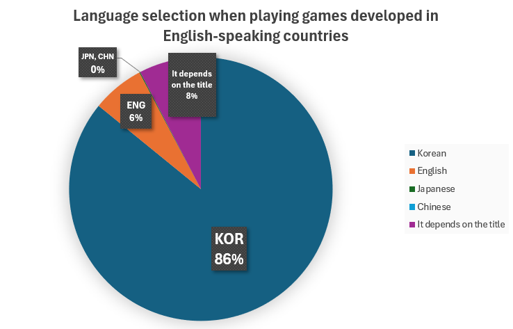
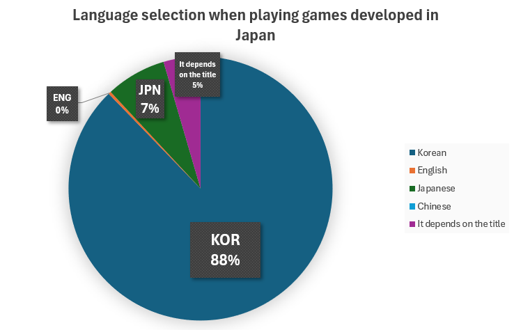
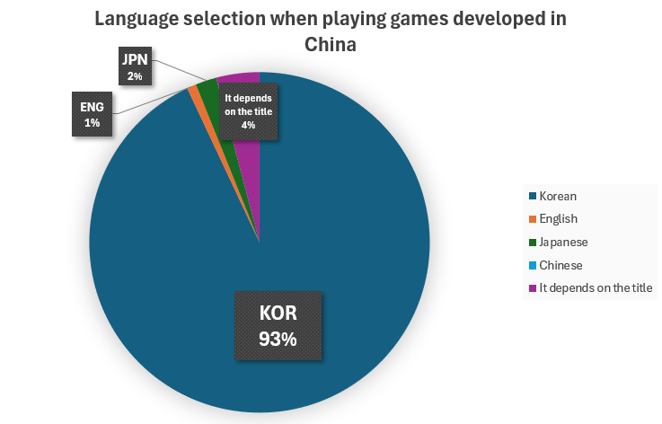
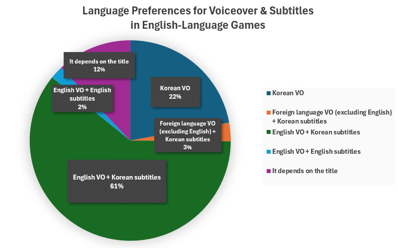
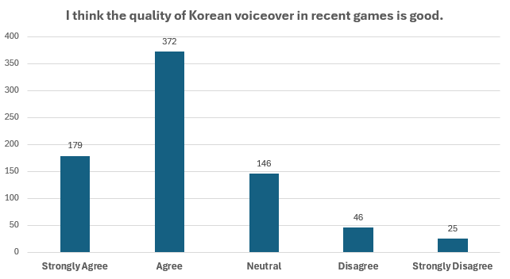
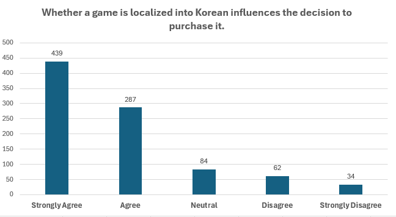
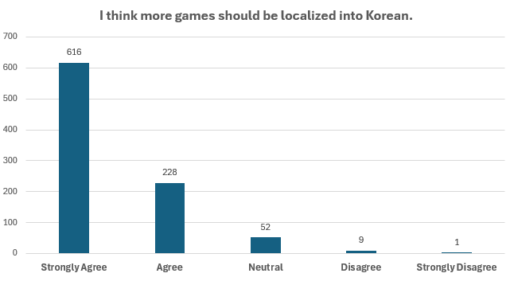

Hello, this is Asrec Studio!
Have you ever felt disappointed because a new game you wanted to play did not support the Korean language?
For those who are good at foreign languages, it might be okay to play. But since it is not your native language, it is often hard to understand dialogues or situations all at once. Especially in quests with quick hints or games with lots of fast action, it is easy to get confused about what was said. This often breaks the flow of the game.
According to the 2025 Game Industry White Paper by KOCCA, the Korean game market is the 4th largest in the world (7.8% share). As the Korean market grows steadily in the global game market, the number of titles supporting Korean has also increased a lot. According to GameMeca, as of 2024, the rate of Korean language support on Steam reached 21.1%, which is 9th in the world. As you can see, it is no secret that Korea is one of the most attractive game markets in the world.
So, what do Korean players think about the Korean localization of foreign games?
Recently, we read a deep research paper about the Korean localization of foreign games. In that paper, they did a survey on localization preferences with 906 Korean gamers through game websites, online communities, and social media. We want to share the results and the insights from this study with you.
Kim Hong Kyun (2025). A Study of Gamers' Preferences and Perceptions of Game Localization in South Korea [Doctoral Dissertation, Dongguk University]. https://www.riss.kr/link?id=T17265299
1. Do Korean Players Prefer Using Korean When Playing Games?
First, the survey examined whether Korean players prefer to play foreign games in their native language. The results were categorized based on whether the game was developed in English-speaking regions or Asian regions.

Language selection when playing games developed in English-speaking countries
As expected, Korean players showed a strong preference for playing in Korean (86%) when playing games developed in English-speaking countries. Then, what languages do they prefer when playing games developed in Japan and China?

Language selection when playing games developed in Japan

Language selection when playing games developed in China
Similar to games from English-speaking countries, the preference for Korean in games developed in Japan and China is also overwhelmingly high (88% and 93%, respectively).
You might think, "Isn't it obvious that Korean players would want to play in Korean?" Along with these results, the study also looked into the specific reasons "why" they prefer the Korean language.
Reasons for Preferring Korean
1. Convenience
- "It is my native language, so it is the easiest to read."
- "Even if I can speak a foreign language, Korean is more comfortable."
- "With Korean, I can process information faster and make quick decisions."
- "It is less tiring."
2. Understanding
- "It is hard to understand context that only native speakers of other languages would know (such as wordplay)."
- "I can focus entirely on the gameplay."
3. Immersion
- "The level of immersion is higher."
- "It is hard to stay immersed when I have to use my brain to translate."
- "Since I can react and think instantly to the text and audio, the immersion becomes deeper."
To summarize, the research states that the reason Korean users prefer Korean is that they can understand the game's story and systems more comfortably and quickly than in a foreign language, allowing for full immersion.
Then, shall we look at why some players choose to play in a foreign language instead?
Reasons for Preferring a Foreign Language
- "The localization quality is poor. Mistranslations are frequent, and the dialogue often differs greatly from the original."
- "I am capable of playing in the original language."
- "Playing in the original language provides the best gaming experience."
- "I want to experience the original work exactly as it is, reflecting the developer's true intent."
- "For anime-style games, Japanese is the natural choice."
This shows that Korean users want to play games "as they are" (without distortion) to ensure the best possible gameplay experience and immersion.
2. Do Korean Players Prefer Korean Voiceover and Subtitles?

Language preferences for Voiceover & Subtitles in English-Language Games
The preference for voiceover and subtitles was quite surprising. Although there was an overwhelming preference for the Korean language earlier, the results showed an ironic twist: 61% of players actually prefer foreign languages for VO. The detailed reasons for this choice can be seen below.
Reasons for Preferring Foreign Voiceover
1. Setting and Background
- "Using voices that match the game's setting increases immersion."
- "It feels awkward when a character who looks like a foreigner speaks Korean."
- "I want to play the game in a way that best fits its local atmosphere."
2. Voice Actors
- "I am not satisfied with the acting quality."
- "I feel like Korean voiceover always uses the same small group of voice actors."
- "The moment I hear a voice I've heard too many times before, it breaks my immersion."
3. Awkwardness
- "Korean voiceover feels unfamiliar and awkward."
- "I think it feels awkward because there aren't many games that support Korean voiceover yet."
- "For the anime-style genre, Japanese voiceover feels more familiar."
The game's "setting" was the most frequently mentioned reason for preferring foreign voiceovers. The mismatch between a character's appearance and the language they speak — the dissonance in audio-visual perception — acts as a factor that breaks the player's immersion.
Regarding "voice actors," many opinions pointed out the limitations of the domestic voice acting industry rather than the skills of the actors themselves. Some noted that the pool of Korean voice actors is too small, and others felt that the issue lies more with the directing than the acting quality.
Reasons for Preferring Korean Voiceover
1. Immersion
- "I can focus better because I don't have to read subtitles separately."
- "My eyes don't wander, so I can fully enjoy the visual experience."
- "It is hard to read subtitles when I need to control the game while the story is progressing."
2. Convenience
- "As a Korean, it feels natural to choose familiar Korean voiceover."
- "It is easy on the ears."
- "Korean is familiar, so it's easier to catch and understand."
3. Naturalness
- "Korean voiceover doesn't feel awkward in cartoon-style games."
- "In games from other Asian countries, characters look similar to Koreans, so it doesn't feel out of place."
- "For titles that are not tied to a specific country, like StarCraft, I prefer Korean."
In summary, the "quality" of localization is a decisive measure of immersion. If the Korean language blends well with the game's setting, it provides a superior sense of immersion; otherwise, it can actually disrupt the flow of play.
3. What Do Korean Users Think About Localization Quality, and What Do They Expect?

Korean users' perceptions of the quality of Korean voiceover
As seen in the survey results above, Korean users generally give positive evaluations of the quality of Korean voiceover. This suggests that the preference for foreign languages doesn't necessarily come from a perception that Korean voiceover is poor. Rather, it stems from a desire to fully immerse themselves in the original work using a language that matches the game's setting.
However, users continue to raise the following concerns:
- "Because the pool of voice actors is limited, the same voices appear across multiple games, sometimes in roles that don't suit them."
- "Listening to sentences written in a 'translated style' (awkward phrasing) through voiceover completely breaks the immersion."
- "Characters with strong dialects are often translated into plain, standard Korean."
- "There are cases where the audio quality is inconsistent."
- "The acting tone is sometimes overly exaggerated."
To address this, localization studios need to make every effort to minimize factors that break immersion — discovering voices that best match a character's appearance and personality, and maintaining a balanced acting tone through detailed on-site directing during recording sessions.

Purchase Intent Based on the Availability of Korean Localization

Expectations for Korean Localization
The availability of Korean localization directly influences whether players purchase a game. Titles without Korean support naturally have lower accessibility for players. Furthermore, there is a strong desire among users for even more games to support Korean in the future.
Summary: The "Real" Message from Korean Gamers on Localization
- Korean is the "Standard": There is an overwhelming desire to understand a game's systems and story instantly, without any language barriers.
- Voiceover as a Tool for "Immersion": It has the power to let players focus on the action on screen by removing the effort of reading subtitles.
- No Compromise on "Quality": Casting that doesn't match the setting, awkward "translated-style" phrasing, and plain adaptations that erase a character's personality all act as factors that disrupt immersion.
Ultimately, the key insight from this study is that when users chose foreign voiceovers, it wasn't because they disliked Korean voiceover. Rather, it was because they "wanted to fully experience the original immersion of the work."
The Korean market has already grown massive, and the standards of its users are higher than ever. Localization is not just a task of breaking down language barriers; it is the design of an experience that makes a player feel, "This game was truly made for me," throughout their entire playtime.
Asrec Studio will constantly think about what "authentic" localization looks like — one where immersion is never broken for even a single moment — and we will strive to protect that essence.
Thank you for reading!
Sources
Kim Hong Kyun (2025). A Study of Gamers' Preferences and Perceptions of Game Localization in South Korea [Doctoral Dissertation, Dongguk University]. https://www.riss.kr/link?id=T17265299
Game Industry White Paper 2025, KOCCA. https://www.kocca.kr/shortUrl/FICq